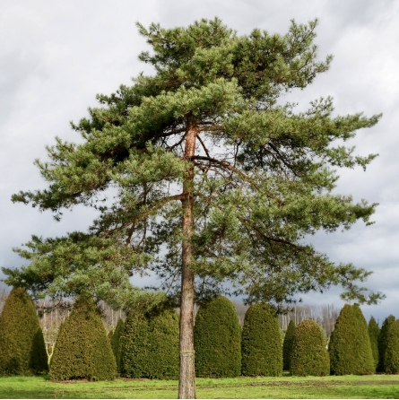
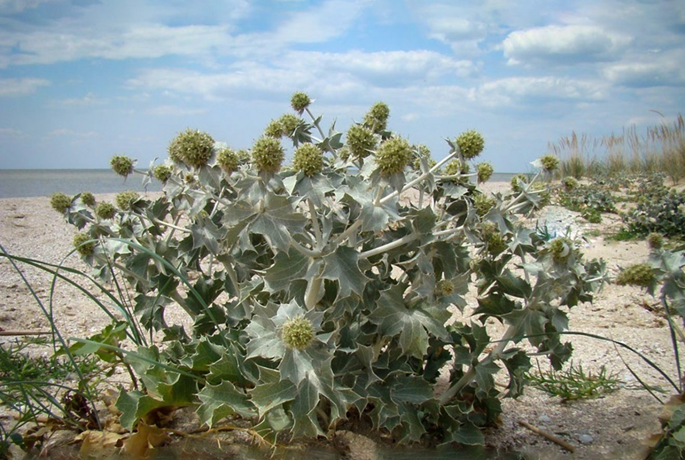
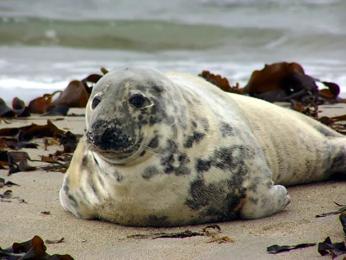
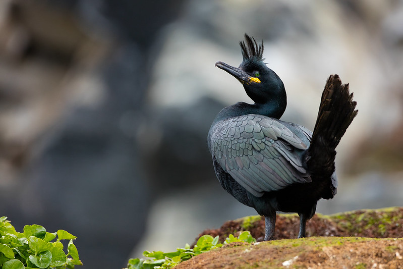
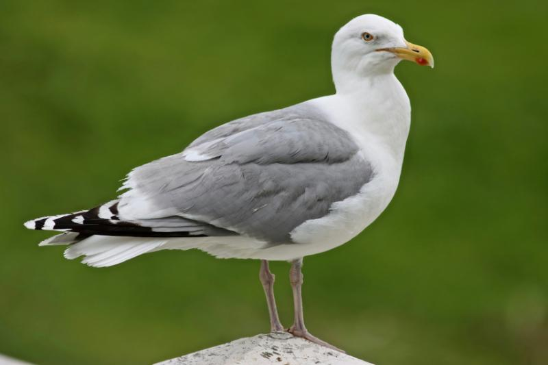

Gamta
Lietuvos pajūrio augalai, gyvūnai ir kraštovaizdis.
Pajūrio ekosistema
Lietuvos pajūris išsiskiria kopomis, pušynais ir Baltijos jūros pakrante.
Čia aptinkama daug retų augalų ir gyvūnų rūšių.
Augalai
Pajūrio augalai prisitaikę augti smėlingoje dirvoje ir atlaikyti stiprų vėją.

Jos ilgos šaknys padeda sutvirtinti kopų smėlį.

Ji dažna pajūrio miškuose, kur dirvožemis smėlingas.

Retas pajūrio augalas, kurio negalima skinti.
Gyvūnai
Pajūrio buveinėse galima sutikti įvairių paukščių, o Baltijos jūros pakrantėje ir ruonių.

Baltijos jūros žinduolis. Pamatęs ruonį paplūdimyje, laikykis atstumo.

Puikiai nardo ir gaudo žuvis. Dažnai peri didelėmis kolonijomis pajūrio teritorijose.

Pajūryje dažnas paukštis, ieškantis maisto pakrantėje ir lydintis žvejų laivus.